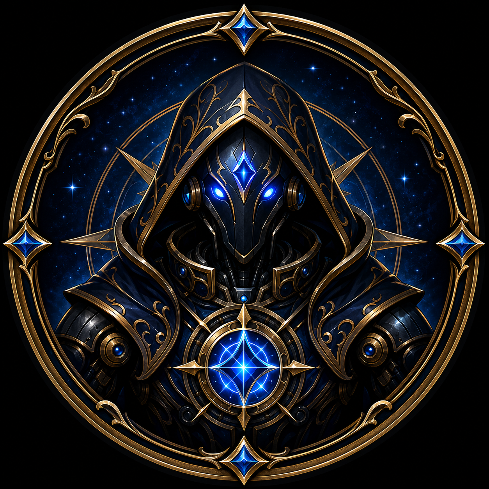

Twitch & Kick LIVE
Automatic LIVE detection and rich Discord announcements for configured Twitch and Kick creators.
V1.2 • Twitch • Kick • YouTube • TikTok
Venture CommunityPilot brings Twitch, Kick, YouTube, and TikTok creators together in Discord. Publish rich LIVE alerts, announce new YouTube uploads, route notifications by creator, run private support tickets, and grow your community—with every feature free.

Version 1.2 • Every feature stays free
Automatic LIVE detection and rich Discord announcements for configured Twitch and Kick creators.
Announce YouTube livestreams, newly published videos, or both for each configured channel.
Send timed manual TikTok LIVE announcements with safe automatic expiry and an early end command.
Choose a destination channel and optional role ping for every Kick, YouTube, or TikTok creator.
Use Stream Teams, Live Roles, filters, role routes, custom messages, and configurable stream-end actions.
Open private support channels with claim, close, reopen, and delete controls—100% free.
The free promise
Venture CommunityPilot is a 100% free, non-restrictive Discord bot for streamer communities. Optional Ko-fi tips help cover hosting and continued development; no feature is locked behind payment.